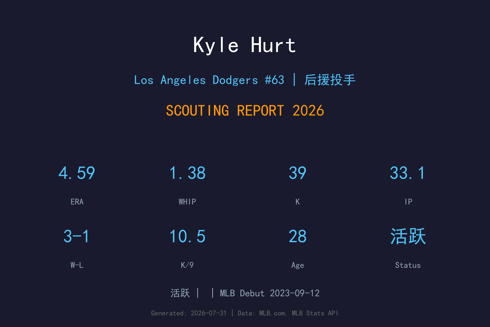
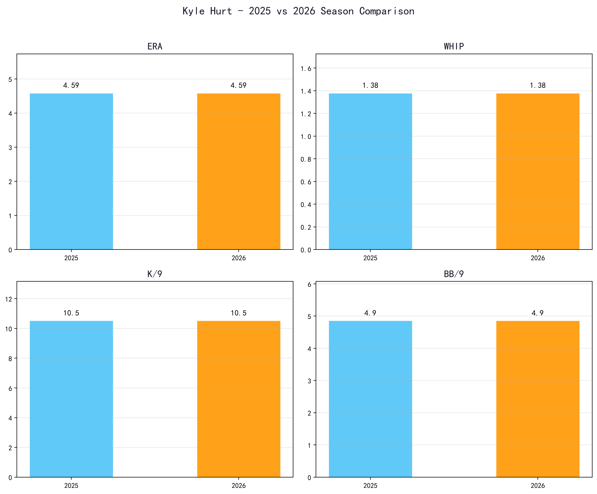
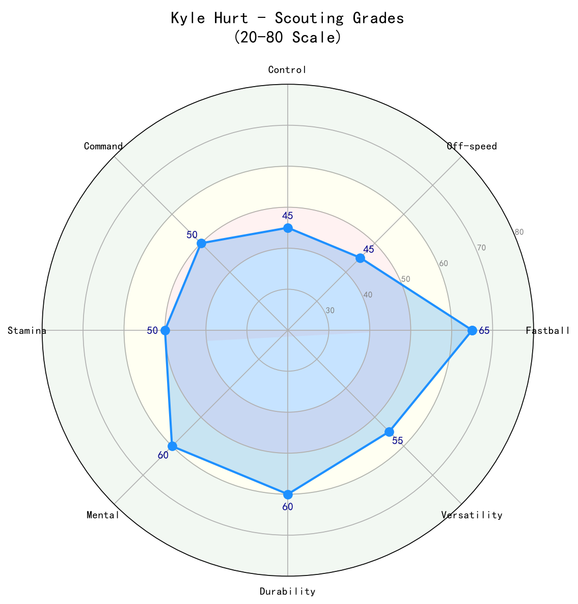

Los Angeles Dodgers #37 | 投手 | 活跃

Kyle Hurt 是道奇自家农场培养的大体型右投后援，拥有优秀的三振能力但控球起伏不定。2026 年他出赛 33 场，缴出 4.59 ERA、1.38 WHIP、K/9 10.53 的成绩，三振能力出色但保送率偏高 (BB/9 4.86) 限制了他的 leverage 上限。28 岁的 Hurt 正处于"证明自己是稳定大联盟后援"的关键阶段，若能改善控球，他有机会成为道奇牛棚中值得信赖的中段 布局（setup）man。
Kyle Hurt 于 2023-09-12 登上大联盟，开始在高水平舞台展现自己的实力。
Kyle Hurt 目前是洛杉矶道奇活跃名单的一员，作为投手为球队提供稳定贡献。

📈 上图为近三年核心数据趋势。柱状图高度代表该年度表现，便于快速比较球员状态的上升或下滑。
| 赛季 | G | GS | W-L | ERA | IP | K | BB | WHIP | K/9 | BB/9 |
|---|---|---|---|---|---|---|---|---|---|---|
| 2025 | 22 | 0 | 2-1 | 4.24 | 23.1 | 28 | 12 | 1.41 | 10.80 | 4.63 |
| 2026 | 33 | 1 | 3-1 | 4.59 | 33.1 | 39 | 18 | 1.38 | 10.53 | 4.86 |
Hurt 的 2026 年与 2025 年数据极为相似：三振能力稳定，但 ERA 与 WHIP 受保送拖累。
Hurt 的速球具备 elite 球速，均速可达 97 mph 左右。身材高大让他能创造不错的下坠角度，但控球不稳时这颗球容易被打出长打或制造保送。
主要变化球，横向位移明显，对右打者效果不错。当滑球落在好球带角落时是出局武器，失投时则容易被硬打。
偶尔用来对付左打者，使用频率不高。若能提升这颗球的稳定性，可有效降低 左右差距。
Hurt 采用标准的四分之三投球机制，6 尺 3 寸、240 磅的身材让他在投球时拥有不错的稳定性与耐久度。他的动作节奏有时会过快，导致手臂跟不上身体，造成控球失准。若能放慢节奏、提升重复性，BB/9 有望下降。

| 项目 | 评分 (20-80) | 等级 |
|---|---|---|
| 速球 | 60 | B+ |
| 滑球 | 55 | B |
| 变速球 | 45 | C+ |
| 控球 | 40 | C |
| 指挥 | 45 | C+ |
| 三振 | 60 | B+ |
| 心理素质 | 50 | B- |
| 耐久 | 55 | B |
Kyle Hurt 是"半完成品"：他有成为 布局（setup）man 的 原始球威，但控球是通往更高 leverage 的最大门槛。
B- 级 / 高 K 但高 BB 的后援
Kyle Hurt 是道奇 2020 年第 5 轮选秀选中的右投，大学时期曾以先发投手身份培养。进入职棒后，道奇将他转为后援，希望利用他的球速与体型优势。2023 年 9 月 12 日完成大联盟首秀。过去几个赛季他在大联盟与小联盟之间起伏，始终未能完全站稳，但 2025-26 年的三振数据证明他有能力在大联盟制造出局。
*⚾ 洛杉矶道奇队球探报告*